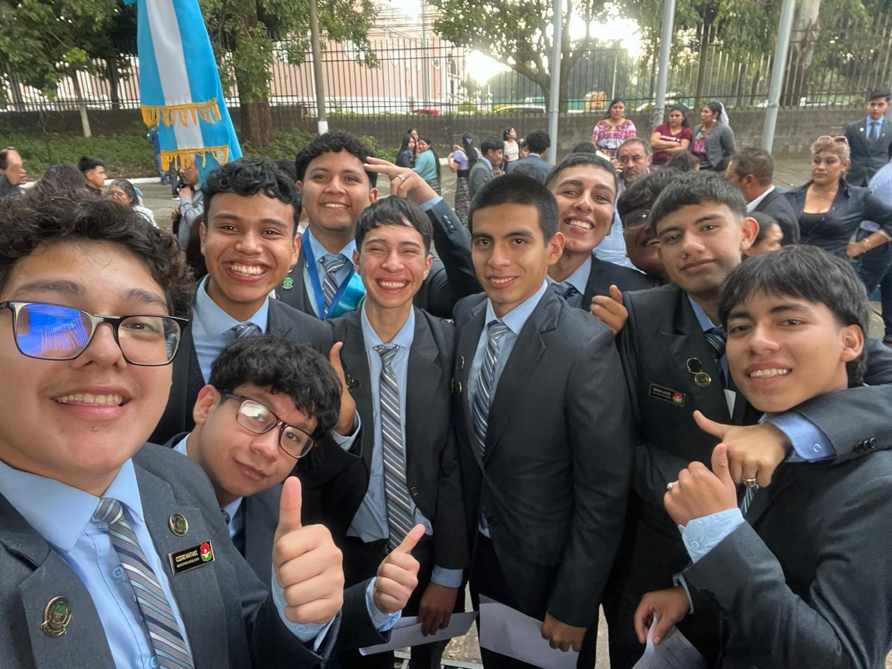
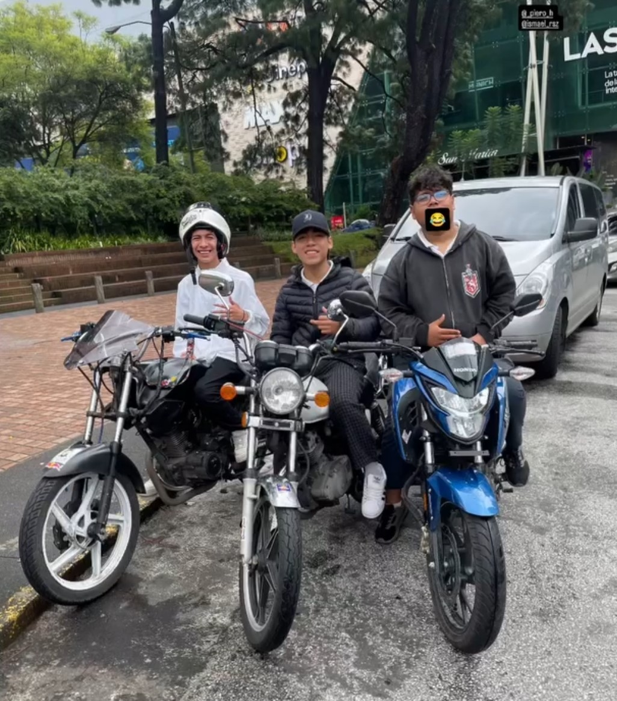
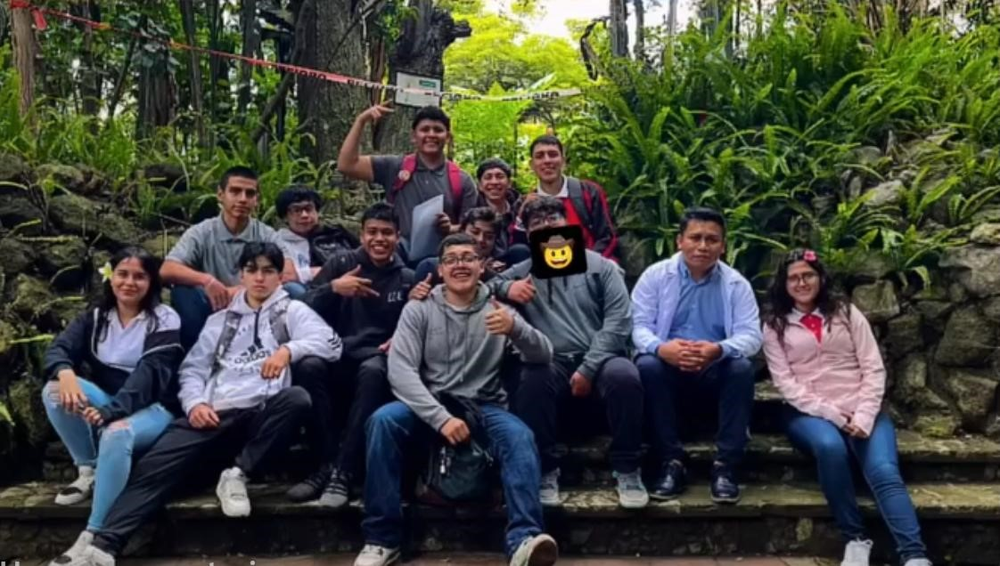

|
|
En sexto primaria volvi a ser mas amigable y sociable, ya me estaba adaptando de nuevo a como era antes, ya no me daba mucha inseguirdad hablar con alguien
y un sabado normal, salimos de viaje con mi padre y unos amigos de el a unas piscinas y estuve todo el dia molestando y jugando, ya cuando ibamos de regreso para la casa escuchamos
en el radio que habian puesto una cuarentena de 2 semanas, y me puse feliz por que no tenia que ir a estudiar, sin saber que esa cuarentena iba a durar tanto. En la etapa de la cuarentena
me volvi muy sedentario y debido a eso empece a subir de peso, y me volvi muy inseguro de mi, no queria salir ni a la calle a jugar con mis amigos por la misma inseguridad de ser gordo.
En primero basico empece a recibir clases virtuales, me costo mucho por que a veces me quedaba dormido a media clase, no ponia mucha atencion y a veces no entregaba tareas, me adapte casi
a medio año, pero no paso a mayores y sali en limpio ese año. En segundo basico medio año fue virtual y despues fueron clases presenciales, igualmente me costo adaptarme por que estudiaba muy lejos
y conoci muchos amigos en ese tiempo, todavia hablo con los del grupito que me juntaba, aprendi bastante en ese año por que los maestros eran muy estrictos y no permitian fallos, en ese tiempo
tuve que dar lo mejor de mi a nivel academico para no perder ninguna materia, ese año logre salir en limpio y tambien consegui muchas amistades reales. El siguiente año estuve en un area de
electricidad y me gusto mucho por que aprendi demaciadas cosas, aunque a veces me saltaba las clases para jugar futbol, aprendi a hacer conexiones, empalmes, conectar leds con sescuencias,
actualmente soy yo quien hace todo lo relacionado a electricidad en la casa, me gusta mucho y me entretiene, hice unos semaforos con conexiones y focos, fue una etapa donde aprendi demaciadas cosas,
y ahora las utilizo muy seguido, aprendi con unos amigos a ver todo lo relacionado con mecanica de motos, y cuando mi moto necesita algun cambio de aceite, filtro o pastillas de freno, yo hago todo el
mantenimiento y lo siento mas seguro que llevarla a la agencia. En todo lo de bachillerato aprendi a hacerle mantenimiento a las computadoras, y a programar pero unicamente lo mas basico y
sencillo, aprendi un poco de visual basic, Pascal, Psaint y C++ pero unicamente lo mas facil, me toco investigar y aprender por mi cuenta, ahora domino un poco mas C++ y Phyton.
Aprendi a manejar motocicleta con mi padre, pero fue facil para mi, lo malo fue que me enseño a manejar y a filtrar en la Calzada San Juan, y me ponia algo nervioso por los buses,
actualmente tengo 3 años manejando moto y solo he tenido 1 accidente.
Siento que fue una de las etapas donde mas moleste en clases y tambien era muy serio, era algo bueno y malo
por que por molestar mucho a veces no ponia atencion en clases y me quedaba atrasado en los temas y a la hora de entregar tareas algunos ejercicios los hacia mal, pero todo eso lo cambie en quinto
y fue el año donde mejor nota saque de todos los años que llevaba estudiando, asi me asegure de graduarme si o si, y no tener que estar corriendo los ultimos meses para ver si ganaba o no,
quise asegurarme y estar tranquilo, tanto que la ultima unidad, era el unico que ya tenia ganada todas las clases y fue algo que me motivo y me dio satisfaccion el ver que mi esfuerzo
ya me habia dado resultados.


